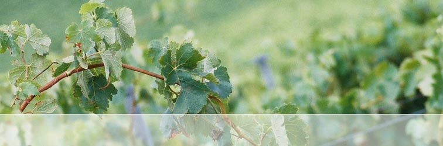
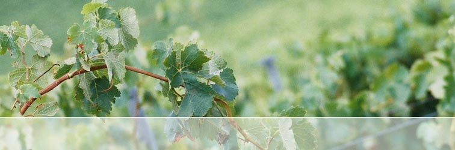
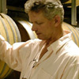
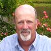

Although production is limited, the 2005 MAX V is now
available to all wine
enthusiasts and advocates of small batch winemaking.
Please register your interest
by contacting info@rocwines.com.au
or visit our ORDERING PAGE
for further details.
Member's Login Page
Proceed to members section – with Behind the scenes, winemakers notes, barrel sample analysis, interviews
and a comprehensive photo gallery.
FROM VISION TO VINE – THE MAX V STORY
The dedication to small batch winemaking was the catalyst to producing the MAX V. The ability to capture the essence of a blend through the handcrafting of many unique individual parcels was a challenge that would lead to a distinctive product. Full story
CHIEF WINEMAKER – SIMON GILBERT
|  | "Winemaking is not entirely based on a scientific approach but surety. The ability to ensure the best fruit, the best oak and attention to detail in the entire production process will eventuate in a product that will always over deliver in quality. Joining the passionate team at Robertson of Clare Wines, of Clare Valley wine growers and distinguished French cooperages will only make these objectives easier to achieve". (Simon Gilbert) |
CHIEF WINE GROWER – LEIGH ELDREDGE
|  | As a graduate from the prestigious Roseworthy College (The University of Adelaide) in 1991 alongside the general manager of Tamar Ridge Estate in Tasmania Will Adkins and Wine Purchaser for Qantas Airlines Peter Nickson, Leigh has become one of the Clare Valley's top Wine Growers. With 15 years experience working vintages for Leasingham, Stanley and Annie's Lane Quelltaler he has been acknowledged with a number of prominent accolades for his wines. Awards and accolades for Eldredge Vineyards, Clare Valley, include: |